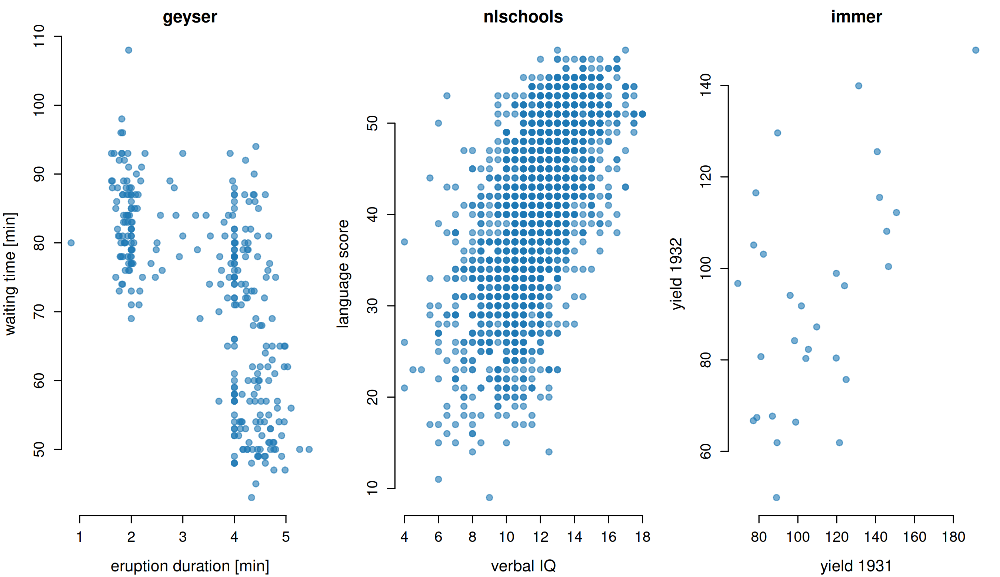
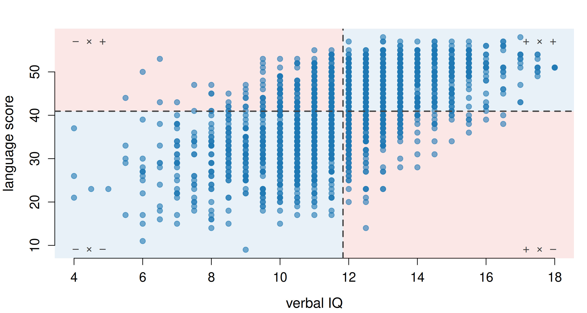
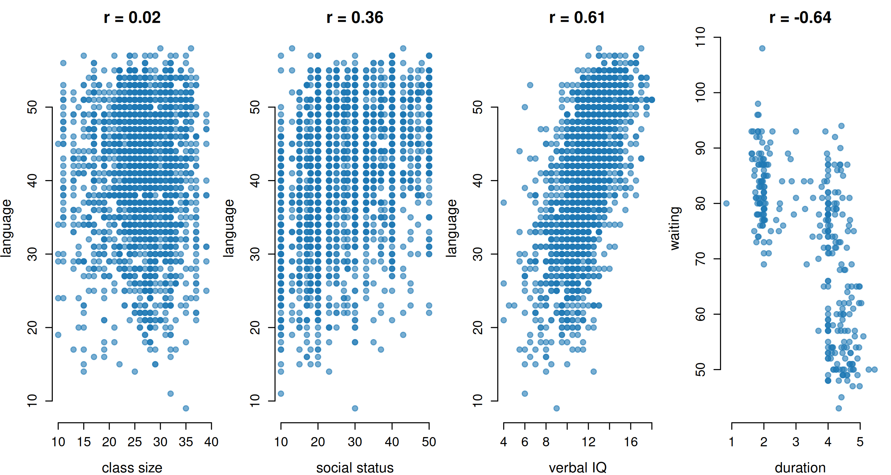
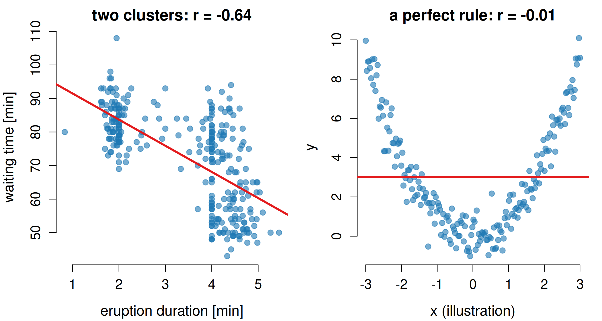
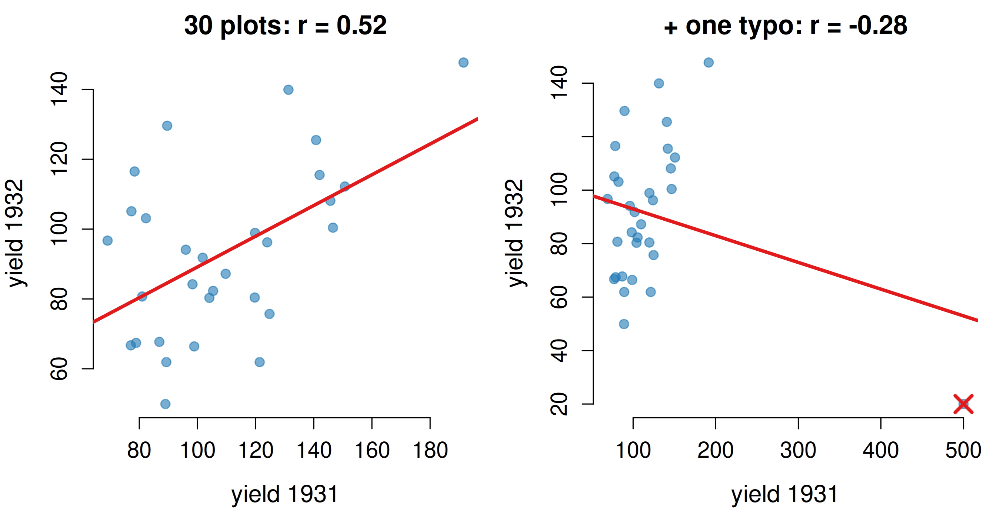
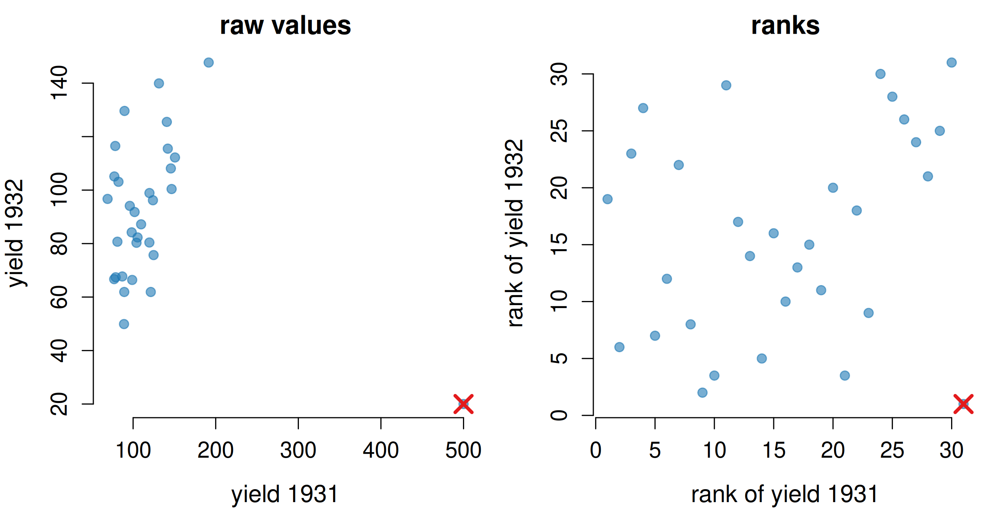
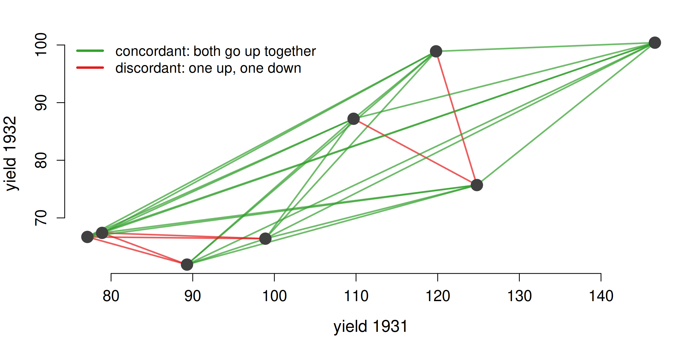
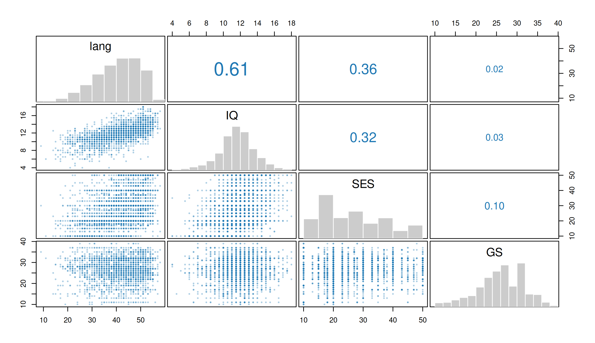
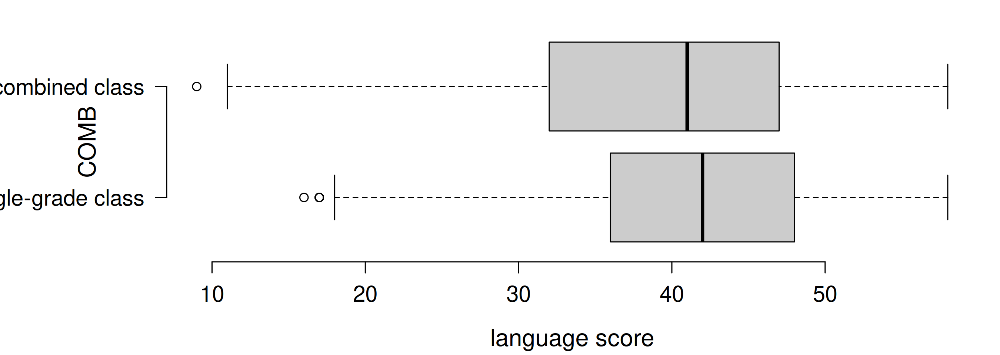
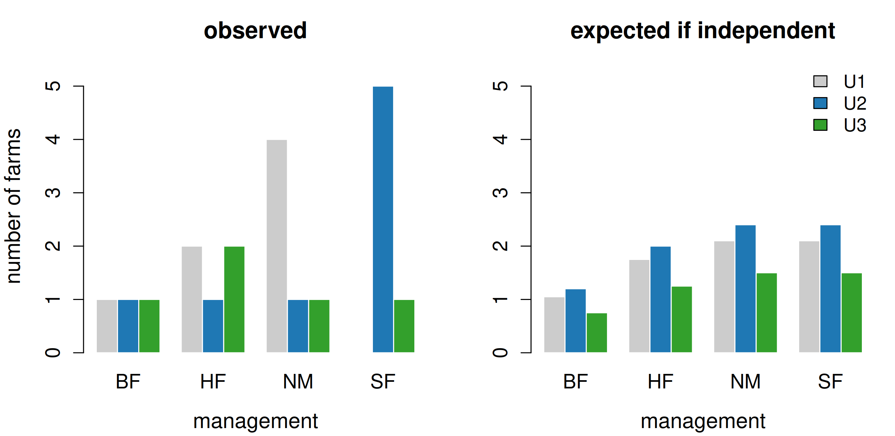

| cov | cor | |
|---|---|---|
| yields as given | 361.965 | 0.52 |
| same yields × 10 | 36196.460 | 0.52 |
| nlschools IQ vs lang | 11.359 | 0.61 |
Dormann (2020), Environmental Data Analysis — Chapter 5
2026-09-01
Until now we described one variable at a time. From here on we have two.
Note
Four MASS data sets: geyser, immer, nlschools and farms.
The invalid assumption that correlation implies cause is probably among the two or three most serious and common errors of human reasoning. — Stephen J. Gould
German towns recorded a simultaneous decline in storks and in newborns. The two covary beautifully. No stork has ever delivered a baby.
Correlation only asks whether two variables show the same pattern. Regression (later chapters) additionally assumes that one is a function of the other. This chapter stays firmly on the first question.

Every number in this chapter summarises a picture like one of these.

Multiply each point’s deviation from the two means. Blue quadrants contribute positively, red ones negatively. Their average is the covariance: here 11.4.
| cov | cor | |
|---|---|---|
| yields as given | 361.965 | 0.52 |
| same yields × 10 | 36196.460 | 0.52 |
| nlschools IQ vs lang | 11.359 | 0.61 |
Rescale the yields and the covariance jumps 100-fold, although nothing about the relationship changed: covariances are not comparable across data sets.
Dividing by both standard deviations removes the units and forces the result into [−1, 1] — that is Pearson’s correlation coefficient r.

From “no relationship at all” to a strong negative one. The sign gives the direction, the absolute value the strength — and it is comparable across data sets and units.

Left: the geyser’s two clouds are strongly related, but a single straight line describes them poorly. Right: y is completely determined by x, yet r ≈ 0. A correlation coefficient near zero does not mean “unrelated”.
The ratio of r to its standard error follows a t-distribution — that is where the p-value comes from.
| n.df | r | p | |
|---|---|---|---|
| immer: Y1 vs Y2 | 30 | 0.520 | 0.0032 |
| nlschools: lang vs GS | 2287 | 0.021 | 0.3200 |
| nlschools: lang vs SES | 2287 | 0.355 | 0.0000 |
| geyser: duration/waiting | 299 | -0.645 | 0.0000 |
The weaker correlation (lang–SES) is by far the more convincing one — it rests on 2287 pupils rather than 30 plots. Significance mixes strength with sample size; only r itself measures strength.

A single mistyped record turns a clear positive correlation into a negative one. Pearson’s r assumes roughly normal variables; skew and extremes give a few points enormous leverage.

Replace every value by its position in the sorted data. The runaway point becomes simply “the largest one”, and the cloud is spread out evenly.
| Pearson | Spearman | Kendall | |
|---|---|---|---|
| 30 plots | 0.520 | 0.379 | 0.262 |
| + one typo | -0.278 | 0.250 | 0.181 |
Pearson swings from +0.52 to −0.28; Spearman and Kendall stay positive.
A bonus of the rank transformation: ρ and τ detect any monotonic relationship, not just a straight-line one. A saturating curve has a mediocre r but a high ρ.

τ is simply the surplus of concordant over discordant pairs, scaled to [−1, 1]. Its great virtue is interpretability: a τ of 0.8 really is twice the association of a τ of 0.4 — something ρ and r cannot claim.
| Pearson | Spearman | Kendall | |
|---|---|---|---|
| nlschools: lang vs IQ | 0.610 | 0.619 | 0.460 |
| nlschools: lang vs SES | 0.355 | 0.359 | 0.257 |
| geyser: dur. vs wait | -0.645 | -0.650 | -0.469 |
| immer: Y1 vs Y2 | 0.520 | 0.379 | 0.262 |

r above the diagonal, distributions on it, scatter plots below — and with many variables, hunting for the largest r invites false positives.
Pearson, Spearman and Kendall all assume two continuous variables. Other combinations need their own coefficients:
| variable 1 | variable 2 | method |
|---|---|---|
| continuous | dichotomous (0/1) | biserial correlation |
| continuous | several categories | polyserial correlation |
| dichotomous | dichotomous | χ²-test |
| several categories | several categories | contingency table, χ²-test |
You cannot simply throw such a pair into cor() and quote Pearson’s r — each case has its own formula.

Recode the factor to 0/1 and correlate as usual: for a dichotomous variable Pearson’s r is the point-biserial coefficient. Pupils in combined classes score slightly lower, but the association is weak.
| U1 | U2 | U3 | Sum | |
|---|---|---|---|---|
| BF | 1 | 1 | 1 | 3 |
| HF | 2 | 1 | 2 | 5 |
| NM | 4 | 1 | 1 | 6 |
| SF | 0 | 5 | 1 | 6 |
| Sum | 7 | 8 | 5 | 20 |
Twenty Dutch farms, cross-classified by management type and land use.
If the two were independent, each expected count would be row total × column total ÷ N, and SF farms would spread across the three uses like everyone else — instead 5 of 6 are U2.

χ² adds up the squared gaps between the two pictures, relative to what was expected: χ² = 8.89, p = 0.18.
Warning
The χ²-test is only valid when every expected count exceeds 5. In the farms table the largest expected count is 2.4 — R itself warns that the approximation is unreliable.
For such small tables use Fisher’s exact test instead (p = 0.158), which is however very conservative — it will only flag extreme cases. Dormann recommends Barnard’s test as the more sensitive alternative, though it is still rarely used.
Tip
Dormann, C. F. (2020). Environmental Data Analysis: An Introduction with Examples in R, Chapter 5. Springer.